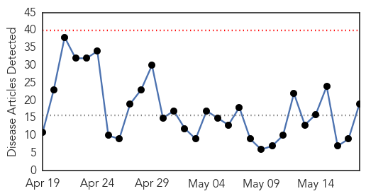
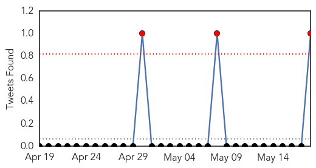
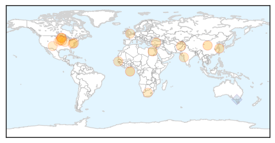

Toggle navigation
Early Warning
Daily Alerts
Influenza
May 18, 2015
Compare to:
-
Dengue Fever
Hemmorhagic Fever
Mold/Fungal Infection
Meningitis
Pertussis / Whooping Cough
Middle East Respiratory Syndrome
Cholera
Hepatitis
Chikungunya
Yellow Fever
Bubonic Plague
West Nile Virus
Swine Flu
Ebola
Measles
Unknown
Mumps
30 Day Trends
Web: 0
alerts
, 0
warnings
Twitter: 3
alerts
, 0
warnings
Top Articles:
0.987
Signs Your Dog May Have the Flu
0.900
One-jab universal flu shot in offing
0.895
Bird flu outbreak threatens Iowa's chicken farm industry
0.894
More Than 2 Million Minnesota Chickens to be Destroyed Due to Bird Flu
0.874
Scientists crack memory code for flu-killing ‘assassin’ cells – The Financial Express
0.825
Increase in Egyptian Cases of H5N1 Avian Flu in Humans
0.798
Bird Flu, Iowa, - Story
0.751
May 17, 2015 Archives
0.751
May 17, 2015 Archives
0.751
May 17, 2015 Archives
0.751
May 17, 2015 Archives
0.701
More avian influenza in Iowa
0.694
Summer Brings Fun in the Sun but Threats Lurk Beneath the Water's Surface
0.671
Single flu jab could protect us for life
0.658
Summer Brings Fun in the Sun but Threats Lurk Beneath the Water's Surface
0.609
2 million more US chickens to be killed due to flu
0.588
Pediatric care has come so very far
0.581
What is Ohio's most distinctive cause of death?
0.526
Bird flu outbreak: 2 million more Minnesota chickens to be killed due to virus
Top Tweets:
0.586
RT: You need a flu shot every year. Influenza viruses change frequently a new vaccine is recommended for protection: ht…
Web/News Articles

Tweets

Article Locations

Article Confidences